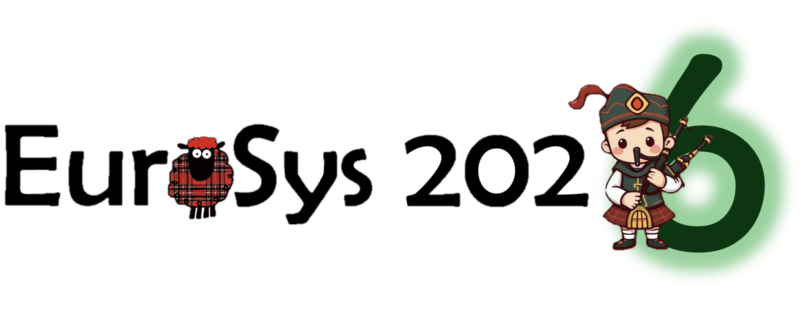
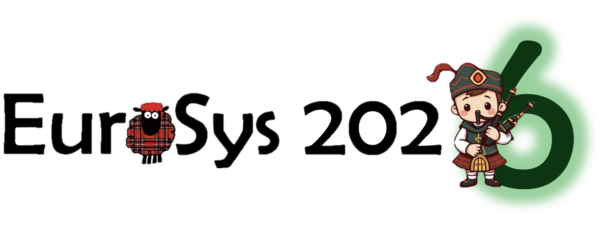

Overview
Welcome to the 21st edition of EuroSys!
 

EuroSys conference is a premier forum for discussing various issues of systems software research and development, including implications related to hardware and applications. The conference brings together professionals from academia and industry. It has a strong focus on systems research and development: operating systems, database systems, real-time systems, networked systems, storage systems, middleware, distributed, parallel, or embedded computing systems.
EuroSys 2026 will be held from 13th (Monday) —16th (Thursday) April, 2026 in Edinburgh, UK.
The 21st edition of EuroSys will follow the pattern established by the previous EuroSys conferences, by seeking papers on all aspects of computer systems. EuroSys 2026 will also include a number of workshops to allow junior and senior members of the systems community to explore leading-edge topics and ideas before they are presented at a conference.
Important dates
Spring deadline
- Paper titles and abstracts due: Thursday, May 8, 2025 (AoE)
- Full paper submissions due: Thursday, May 15, 2025 (AoE)
- Reviews available: Wednesday, July 30, 2025 (AoE)
- Author responses due: Friday, August 1, 2025 (AoE)
- Notification to authors: Friday, August 22, 2025 (AoE)
- Camera-ready deadline: Friday, September 26, 2025 (AoE)
Fall deadline
- Paper titles and abstracts due: Thursday, September 18, 2025 (AoE)
- Full paper submissions due: Thursday, September 25, 2025 (AoE)
- Reviews available: Wednesday, January 7, 2026 (AoE)
- Author responses due: Friday, January 9, 2026 (AoE)
- Notification to authors: Friday, January 30, 2026 (AoE)
- Camera-ready deadline: Friday, March 6, 2026 (AoE)
Organization